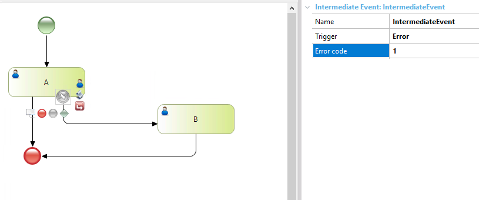

For managing error occurrences during the execution of a certain activity or at a certain point of a process flow.
This event can only be associated with one activity and must lead to an alternative path when it captures an error.
Objects: Business Process Diagram
This case shows an Error Intermediate Event associated with task 'A'.
When the error occurs (Code = 1), the task 'B' will be executed, otherwise, the process is finished.

This is a code example to force the error on Task 'A':
Event 'Error'
&WorkflowContext.Workitem.ThrowError('1')
commit
return
Endevent
Signal Event
Timer Event
Conditional Event
| Backlinks | ||
| BPD Intermediate Events | Compensate Intermediate Event in BPD | Error End Event in BPD |
| Toc:GeneXus BPM Suite |